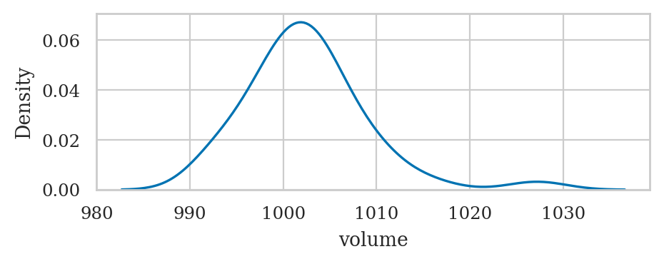
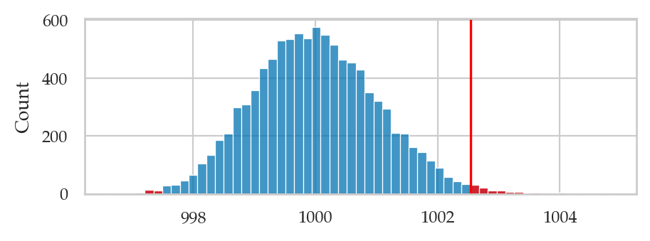

Comparing one group to a known mean (unknown population variance)#
# load Python modules
import os
import numpy as np
import pandas as pd
import seaborn as sns
import matplotlib.pyplot as plt
# Plot helper functions
from ministats import nicebins
from ministats import plot_pdf
from ministats.utils import savefigure
WARNING (pytensor.tensor.blas): Using NumPy C-API based implementation for BLAS functions.
# Figures setup
plt.clf() # needed otherwise `sns.set_theme` doesn't work
from plot_helpers import RCPARAMS
# RCPARAMS.update({'figure.figsize': (10, 3)}) # good for screen
RCPARAMS.update({'figure.figsize': (5, 1.6)}) # good for print
sns.set_theme(
context="paper",
style="whitegrid",
palette="colorblind",
rc=RCPARAMS,
)
# Useful colors
snspal = sns.color_palette()
blue, orange, purple = snspal[0], snspal[1], snspal[4]
# red = sns.color_palette("tab10")[3]
# High-resolution please
%config InlineBackend.figure_format = 'retina'
# Where to store figures
DESTDIR = "figures/stats/intro_to_NHST"
<Figure size 640x480 with 0 Axes>
# set random seed for repeatability
np.random.seed(42)
#######################################################
from ministats import gen_boot_dist
from ministats import tailvalues
def bootstrap_test_mean(sample, mu0, B=10000):
"""
Compute the p-value of the observed `mean(sample)`
under H0 with mean `mu0`. Model the variability of
the distribution using bootstrap estimation.
"""
# 1. Compute the observed value of the mean
obsmean = np.mean(sample)
# 2. Get sampling distribution of the mean under H0
# by "shifting" the sample so its mean is `mu0`
sample_H0 = np.array(sample) - obsmean + mu0
bmeans = gen_boot_dist(sample_H0, np.mean, B=B)
# 3. Compute the p-value
tails = tailvalues(bmeans, obsmean)
pvalue = len(tails) / len(bmeans)
# sns.histplot(bmeans, bins=100)
# sns.histplot(tails, bins=100, color="r")
return bmeans, pvalue
Example 1 revisited#
Mean test on batch 01#
kombucha = pd.read_csv("../datasets/kombucha.csv")
ksample01 = kombucha[kombucha["batch"]==1]["volume"]
bootstrap_test_mean(ksample01, mu0=1000)[1]
0.5575
Correctly accepts this as a regular batch.
# sns.kdeplot(ksample01)
# ksample01.describe()
Mean test on batch 04#
ksample04 = kombucha[kombucha["batch"]==4]["volume"]
bootstrap_test_mean(ksample04, mu0=1000)[1]
0.0025
Correctly rejects this as an irregular batch.
# np.std(ksample04, ddof=1) / np.sqrt( len(ksample04) )
# sns.kdeplot(ksample04)
# ksample04.describe()
Mean test on batch 05 (estimated variance)#
ksample05 = kombucha[kombucha["batch"]==5]["volume"]
bootstrap_test_mean(ksample05, mu0=1000)[1]
0.0148
Correctly rejects this as an irregular batch.
sns.kdeplot(ksample05)
ksample05.describe()
count 40.000000
mean 1002.534750
std 6.553409
min 992.090000
25% 998.515000
50% 1002.060000
75% 1004.870000
max 1027.190000
Name: volume, dtype: float64
{kind=link}

Comparing with the simulation test assuming K ~ norm(1000,10)#
from ministats import simulation_test_mean
muK = 1000
sigmaK = 10
simulation_test_mean(ksample01, mu0=muK, sigma0=sigmaK)[1]
---------------------------------------------------------------------------
TypeError Traceback (most recent call last)
Cell In[14], line 1
----> 1 simulation_test_mean(ksample01, mu0=muK, sigma0=sigmaK)[1]
TypeError: 'float' object is not subscriptable
simulation_test_mean(ksample04, mu0=muK, sigma0=sigmaK)[1]
0.0139
simulation_test_mean(ksample05, mu0=muK, sigma0=sigmaK)[1]
0.107
Incorrectly accepts this as a regular batch, because it assumes \(\sigma_K = 10\), when in fact the variability is much smaller and should have rejected.
# ALT. fully deailed analysis
print("mean(ksample05) =", np.mean(ksample05))
print("std(ksample05) =", np.std(ksample05, ddof=1))
# bootstrap_test_mean(ksample05, mu0=1000)[1]
kbars_boot, pvalue = bootstrap_test_mean(ksample05, mu0=1000)
print("pvalue =", pvalue)
obsmean05 = np.mean(ksample05)
bins = nicebins(kbars_boot, obsmean05)
sns.histplot(kbars_boot, bins=bins)
# plot red line for the observed statistic
plt.axvline(obsmean05, color="red")
# plot the values that are equal or more extreme in red
tails = tailvalues(kbars_boot, obsmean05)
sns.histplot(tails, bins=bins, color="red");
mean(ksample05) = 1002.53475
std(ksample05) = 6.553408972944293
pvalue = 0.0147
{kind=link}
